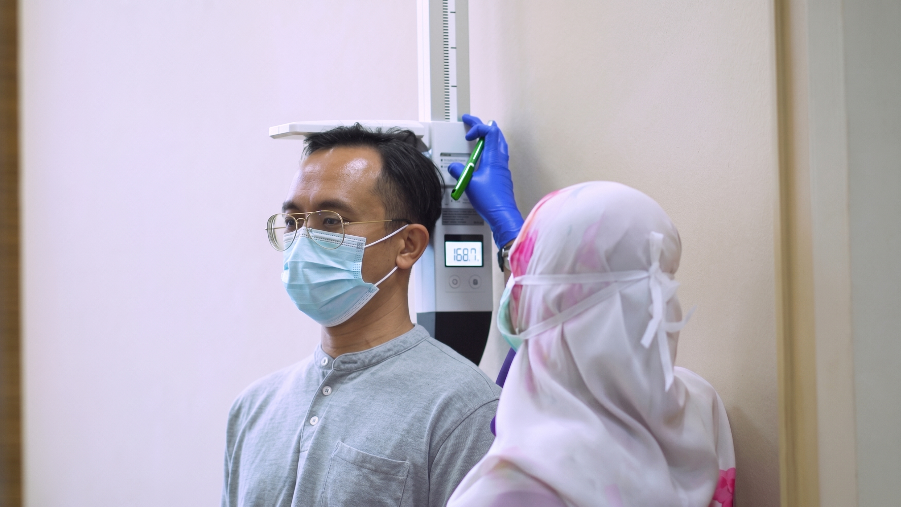
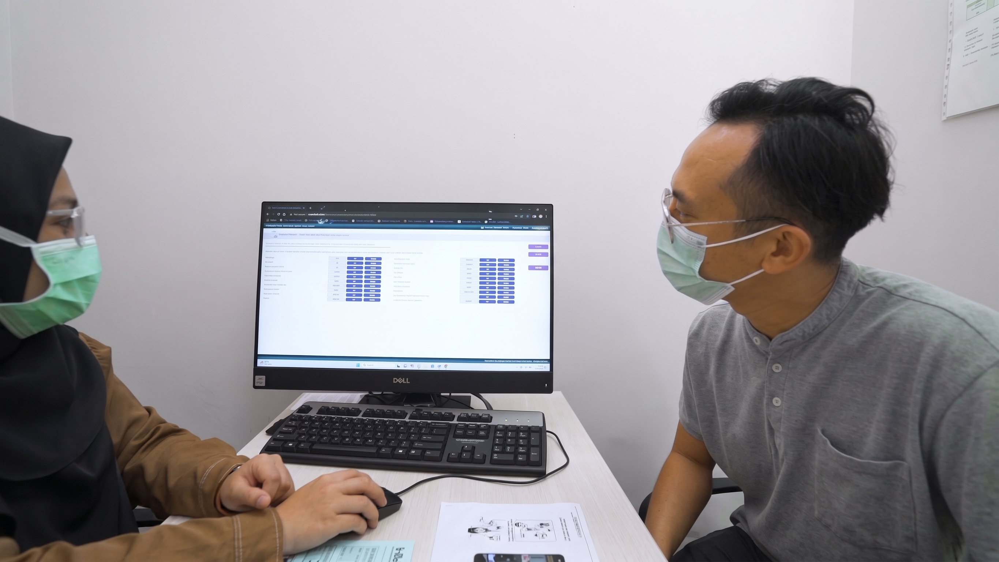
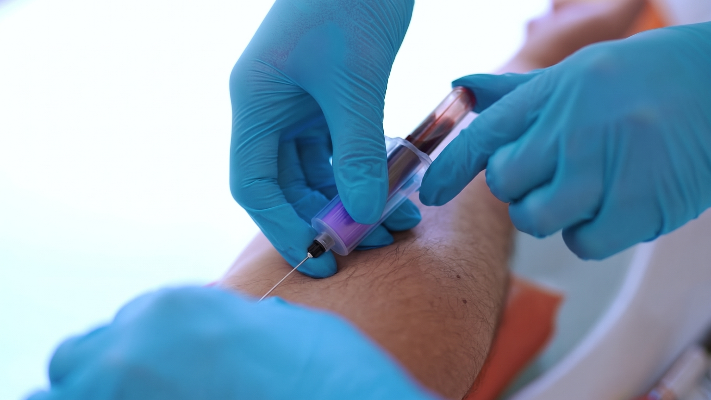

Questionnaire
The session takes approximately 45–60 minutes and covers 14 areas of personal, health, lifestyle, and family information.
Prepare for a screening visit at UMBI in Cheras, read the 2026 participant handbook and find out how to get your results or update your contact details.
UKM describes a typical screening visit of 3–4 hours.

UKM’s participant information describes the initial recruitment phase from 2006 to 2012 and follow-up screening from 2013. Existing TMC participants are invited to contact the team to arrange a follow-up health screening appointment.
Contact the team about your follow-up appointment.
Undergoing health screening at The Malaysian Cohort Project
The team contacts participants to arrange appointments. UKM describes a screening visit of approximately 3–4 hours, conducted by trained staff.
Health and treatment history, residence, occupation, and diet.
Glucose, lipids/cholesterol, full blood count, HbA1c, and kidney function.
Blood pressure, ECG, spirometry, and blood vessel tests.
Check your name at the UMBI lobby security counter, then go to Level 6 and present your identity card at registration.
UKM lists limited UMBI parking and nearby paid parking options, including HCTM Zones L and M and DBKL parking near Cheras Football Stadium. Read the full UKM guide for directions and shuttle information.
Read the complete screening guideSource: UKM MyCohort · Guidelines to Participants – Undergo Health Screening at The Malaysian Cohort Project
Read the 2026 participant handbook published on the UKM MyCohort website.
UKM describes the following measurement areas. Refer to the published procedures and the TMC team’s instructions for your visit.

The session takes approximately 45–60 minutes and covers 14 areas of personal, health, lifestyle, and family information.
The FFQ records food and drink consumption, frequency, and portion sizes. Participants receive an explanation before completing it.
Source: UKM MyCohort · Questionnaire & Food Frequency Questionnaire (FFQ)
Blood and urine samples form part of the health screening described by UKM. The TMC biobank stores biospecimens for basic testing and health research.

Sources: UKM screening guide, UKM biospecimen page, and UKM Biospecimens & Biobank.
UKM describes stool-based screening using an iFOBT (immunochemical faecal occult blood test) kit. The test checks for blood in the stool.
Follow the collection instructions and video published by UKM. Contact TMC for kit availability and return arrangements.
Read kit instructions & FAQsA positive iFOBT result is not a diagnosis of cancer. UKM advises further medical assessment and explains the follow-up process in its FAQs.
Contact TMC: 1 800 88 2007The Results and Feedback Unit prepares printed screening results for participants. The sheet includes blood, urine, body composition, and biophysical measurement information.
From recruitment, with results posted through Pos Malaysia to the registered address.
UKM also describes annual health-status follow-up through telephone interviews.
Use the participant contact information form published on UKM’s website.
Source: UKM MyCohort · Participant Contact Information Update
Use the contact channels published by UKM to ask about the project or share feedback.
General enquiries and feedback.
UKM publishes information on recruitment locations across Malaysia. Refer to its location page and contact the team about your appointment venue.

Sources: UKM recruitment locations, UKM MyCohort contact address, and UKM location map.